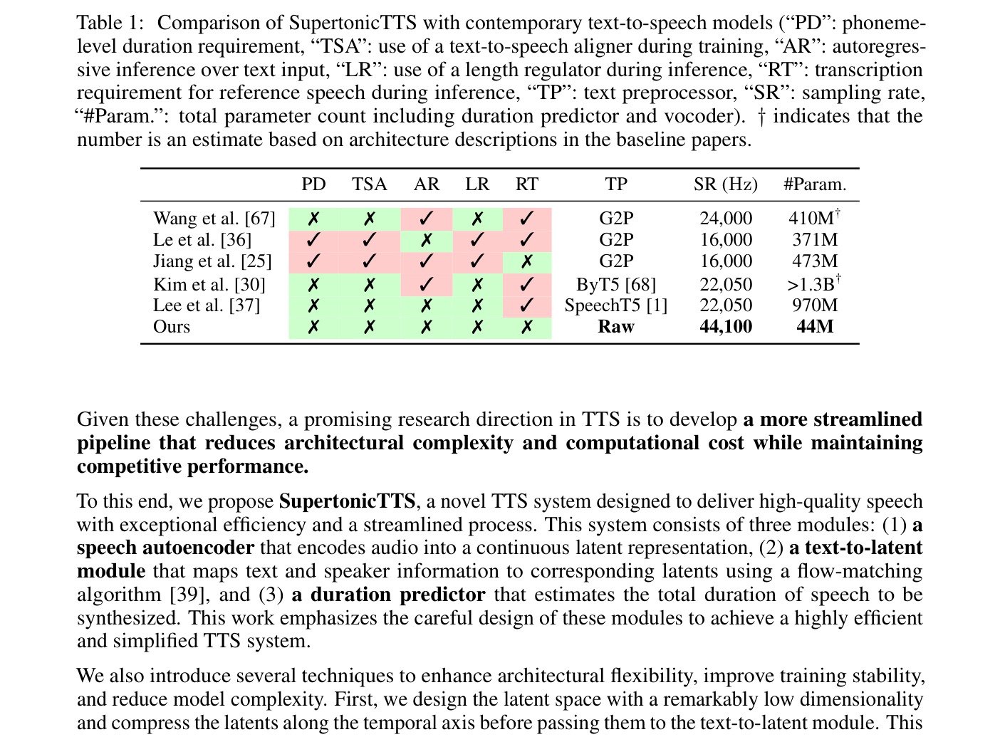
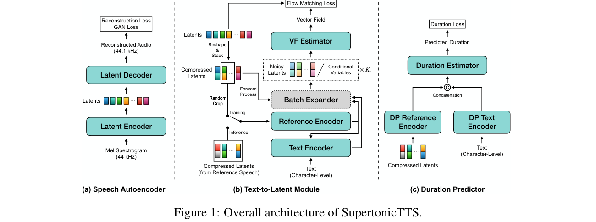
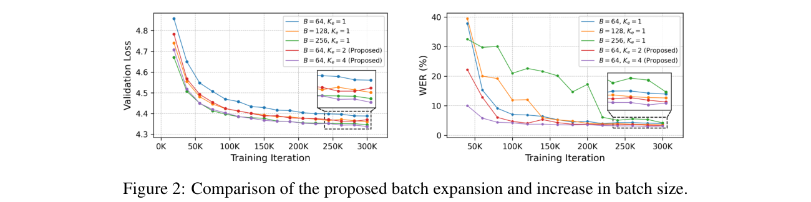
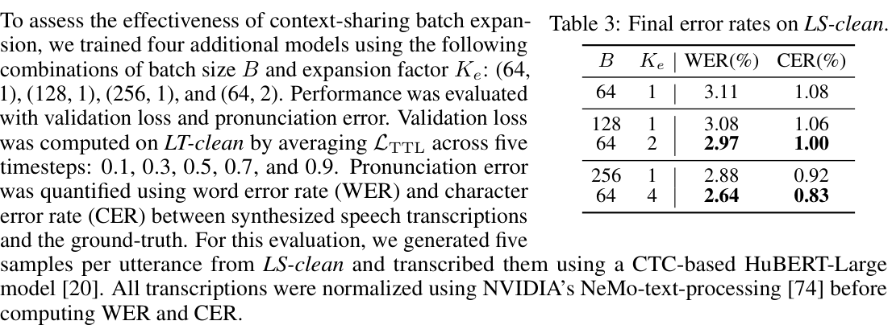
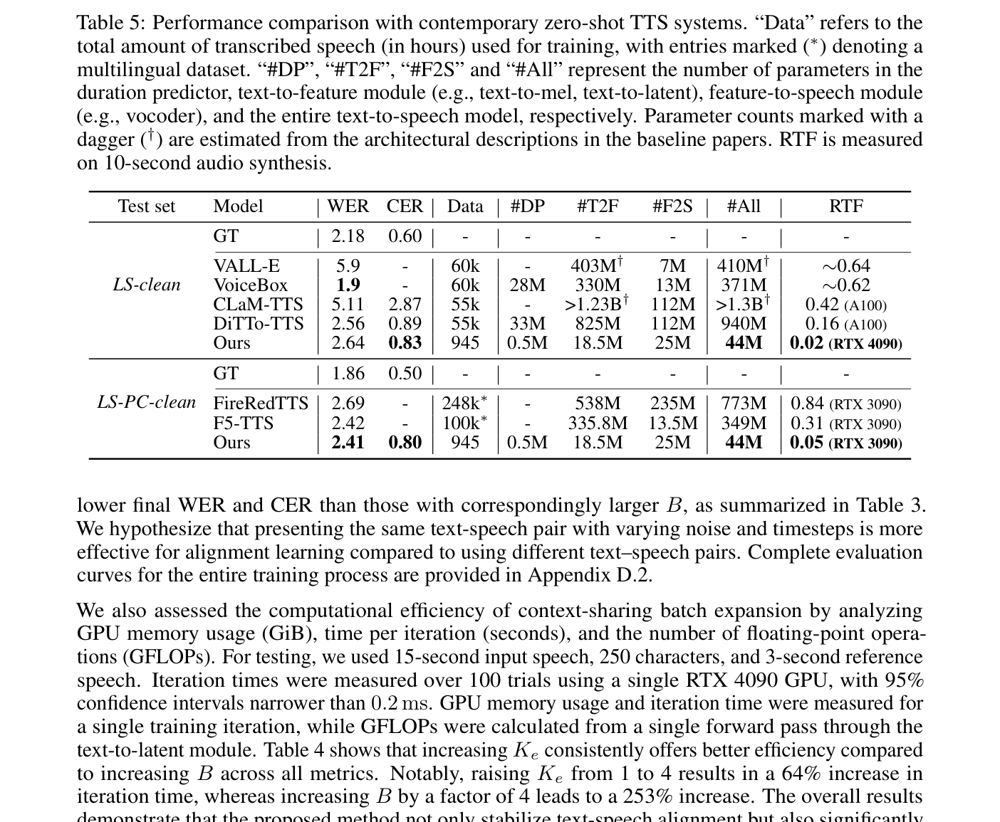
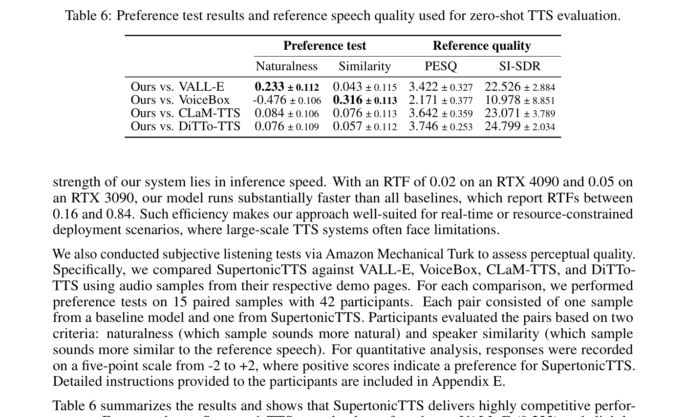

SupertonicTTS: Towards Highly Efficient and Streamlined Text-to-Speech System
现代TTS系统已实现零样本语音克隆、多语言合成、语音转换等惊人能力，但大多数系统仍依赖大量参数和复杂管线——包括音素转换（G2P）模块、文本-语音对齐器、预训练模型用于提取文本和说话人特征。这些因素共同增加了训练和推理的计算开销，并引入组件间的复杂依赖关系。
SupertonicTTS 的核心动机是：在保持竞争力的零样本TTS性能的同时，显著降低架构复杂度和计算成本。如表 1 所示，SupertonicTTS 是唯一一个不需要音素级时长（PD）、不需要对齐器（TSA）、不需要自回归推理（AR）、不需要长度调节器（LR）、不需要推理时参考语音转录（RT）、不需要G2P文本预处理（TP）的系统，且仅用44M参数实现44.1 kHz采样率输出。

SupertonicTTS 基于潜在扩散模型（Latent Diffusion Models, LDMs）框架，训练分为三个阶段：

语音自编码器由潜在编码器和潜在解码器组成。输入为梅尔频谱图（而非原始音频），初步实验表明这种方式加速训练收敛。
潜在编码器基于 Vocos 架构，主要由 ConvNeXt 块构成以提升计算效率。移除原始的傅里叶头，引入线性层在最终归一化之前将隐表示投影到低维空间。编码器仅在训练阶段使用，其高效设计使文本-潜在模块训练期间的快速潜在编码成为可能。
潜在解码器同样基于 Vocos 架构但做了关键修改：ConvNeXt 块中的深度卷积层改为因果和膨胀形式，使解码器支持流式模式；移除傅里叶头，引入两个带 PReLU 激活的线性层；帧级输出通过展平（flatten）得到时域输出，灵感来自 WaveNeXt 但采用更高隐维度和非线性以增强表示能力。
潜在空间维度 $C=24$，远低于梅尔频谱图的通道数。压缩因子 $K_c=6$，将潜在表示从 $(C,T)$ 变换为 $(K_c \cdot C, T/K_c)$ 即 $(144, T/6)$。这使得：
在GAN框架下训练，损失组合为：
$$\mathcal{L}_G = \lambda_{\mathrm{recon}} \mathcal{L}_{\mathrm{recon}} + \lambda_{\mathrm{adv}} \mathcal{L}_{\mathrm{adv}} + \lambda_{\mathrm{fm}} \mathcal{L}_{\mathrm{fm}}$$
其中重建损失 $\mathcal{L}_{\mathrm{recon}}$ 为多分辨率频谱L1损失（梅尔频谱域），对抗损失 $\mathcal{L}_{\mathrm{adv}}$ 使用多周期判别器（MPD）和多分辨率判别器（MRD），特征匹配损失 $\mathcal{L}_{\mathrm{fm}}$ 最小化真假样本判别器特征的L1距离。
复现参数：
从基础分布 $p(z_0) = \mathcal{N}(0, I)$ 采样初始噪声 $z_0$，通过流匹配框架诱导的时间相关向量场逐步精炼为结构化表示 $z_t$。文本-潜在模块根据文本、参考语音和时间 $t$ 估计该向量场，确保最终表示 $z_1$ 保留相关语音属性。
优化目标为：
$$\mathcal{L}_{\mathrm{TTL}} = \mathbb{E}_{t,(z_1,c),p(z_0)} \|\boldsymbol{m} \cdot (v(z_t, z_{\mathrm{ref}}, c, t) - (z_1 - (1-\sigma_{\min})z_0))\|_1$$
其中 $v$ 为文本-潜在模块，$\boldsymbol{m}$ 为参考掩码，$z_1$ 为压缩潜在表示，$z_0$ 为噪声，$z_t = (1-(1-\sigma_{\min})t)z_0 + tz_1$ 为含噪潜在表示，$z_{\mathrm{ref}} = (1-\boldsymbol{m}) \cdot z_1$ 为裁剪潜在表示，$c$ 为文本。设置 $t \sim \mathcal{U}[0,1]$，$p(z_0) = \mathcal{N}(0,1)$，$\sigma_{\min} = 10^{-8}$。以概率 $p_{\mathrm{uncond}} = 0.05$ 训练无条件模式以启用无分类器引导（CFG），此时条件变量替换为可学习参数。
通过压缩因子 $K_c=6$ 解耦高分辨率音频合成与低分辨率潜在建模。潜在表示从 $(24, T)$ 变换为 $(144, T/6)$，优势包括：
这是本文的关键创新之一。给定扩展因子 $K_e$，为同一输入生成 $K_e$ 个扰动输入（采样 $K_e$ 个噪声-时间步对），但复用相同的条件变量。这模拟了增大批量的效果，但当条件预编码后计算更高效。
核心发现：呈现同一文本-语音对配合不同噪声和时间步，比对齐学习使用不同文本-语音对更有效。增大 $K_e$ 在WER/CER改善上优于同等程度增大批量 $B$，且在GPU内存、迭代时间和GFLOPs上均更高效。


参考编码器：接收参考说话人的潜在表示（训练时随机裁剪输入语音片段，推理时从参考语音提取）。使用多个 ConvNeXt 块处理后，通过两个注意力层生成参考键和值向量，遵循 NANSY++ 的音色token块设计。
文本编码器：处理字符级输入（character-level），使用 ConvNeXt 块和自注意力层。输出通过两个交叉注意力层用参考键值向量精炼，产生说话人自适应文本表示。关键设计：不使用G2P和预训练模块，模型从字符输入直接学习一切。
向量场估计器（VF Estimator）：主要由 ConvNeXt 块组成，加上时间条件、文本条件、参考条件块。部分 ConvNeXt 块包含膨胀卷积层以增强模型表达能力。时间条件通过全局添加时间嵌入实现；文本和参考条件使用交叉注意力（条件变量作为键和值）。
SupertonicTTS 在推理时需要待合成潜在表示的总长度。设计了一个句子级（utterance-level）时长预测器，而非音素级时长——这对时长估计误差更具鲁棒性。架构极简：使用少量 ConvNeXt 块和注意力层获取句子级文本嵌入和参考嵌入，拼接后通过线性层变换为标量值（总语音时长），仅约 0.5M 参数。
复现参数：
| 模型 | 测试集 | NISQA ↑ | UTMOSv2 ↑ | V/UV F1 | RTF |
|---|---|---|---|---|---|
| BigVGAN | LT-clean | 4.11 ± 0.03 | 3.16 ± 0.02 | 0.9735 | 0.0124 |
| Ours | LT-clean | 4.06 ± 0.03 | 3.13 ± 0.02 | 0.9587 | 0.0006 |
| BigVGAN | LT-other | 3.61 ± 0.03 | 2.85 ± 0.02 | 0.9620 | - |
| Ours | LT-other | 3.76 ± 0.03 | 2.88 ± 0.02 | 0.9450 | - |
语音自编码器在 NISQA 上竞争力强（LT-clean 4.06，LT-other 3.76超越BigVGAN），UTMOSv2 略低但LT-other上超越BigVGAN。V/UV F1略低于BigVGAN但仍优于其他声码器（HiFi-GAN 0.93, WaveFlow 0.94）。最突出的是推理速度——比 BigVGAN 快 20倍以上（RTF 0.0006 vs 0.0124）。
关键发现：
计算效率对比：
| $B$ | $K_e$ | 内存 (GiB) | 迭代时间 | GFLOPs |
|---|---|---|---|---|
| 16 | 1 | 2.47 | 0.083s | 65.3 |
| 64 | 1 | 8.61 | 0.293s | 261.2 |
| 16 | 4 | 6.92 | 0.136s | 229.6 |
$K_e$ 从1增至4迭代时间增加64%，而 $B$ 增加4倍迭代时间增加253%。上下文共享批量扩展在内存、时间、GFLOPs三维度均更高效。

LS-clean 基准上：
LS-PC-clean 基准上：
推理速度：
参数效率：文本-潜在模块仅 18.5M 参数，VoiceBox 对应模块 330M（约18倍）。

通过 Amazon Mechanical Turk 进行偏好测试（15对样本，42参与者，-2到+2五点量表）：
VoiceBox 的自然度偏好反转经分析发现：VoiceBox 的参考音频质量显著较低（PESQ 2.171, SI-SDR 10.978），而其他基线参考质量较高（PESQ > 3.4, SI-SDR > 22）。SupertonicTTS 更忠实地复现参考特征，但低参考质量导致输出也被判定为不够自然。
1. 极致精简的TTS管线：SupertonicTTS 是首个同时消除G2P模块、外部对齐器、音素级时长、长度调节器、参考语音转录的系统。直接在字符级文本上操作，通过交叉注意力实现文本-语音对齐，仅44M参数实现44.1 kHz输出。
2. 时间压缩潜在表示：通过压缩因子 $K_c=6$ 将潜在表示从 $(24, T/86\text{Hz})$ 变换为 $(144, T/14\text{Hz})$，解耦高分辨率音频合成与低分辨率潜在建模，降低计算成本、缓解对齐挑战、保留全部时间信息。
3. 上下文共享批量扩展：复用同一条件变量生成多个噪声-时间步扰动输入，在WER/CER改善上优于同等程度增大批量，且在内存、迭代时间、GFLOPs上更高效。核心洞察：同一文本-语音对配合不同噪声比不同文本-语音对更有利于对齐学习。
4. ConvNeXt 贯穿设计：所有模块（编码器、解码器、VF估计器、时长预测器）统一使用 ConvNeXt 块，确保轻量和高效。解码器采用因果膨胀卷积支持流式推理。
5. 极致推理速度：RTF 0.02（RTX 4090）/ 0.05（RTX 3090），比所有对比基线快5~40倍。
训练分三个阶段，严格按顺序进行：
| 模块 | 参数量 | 核心组件 | 关键配置 |
|---|---|---|---|
| 语音自编码器（编码器+解码器） | 25M | Vocos + ConvNeXt | 潜在维度24，$K_c=6$，因果膨胀ConvNeXt解码器 |
| 文本-潜在模块（VF估计器） | 18.5M | ConvNeXt + 交叉注意力 | 字符级输入，$K_c=6$，时间/文本/参考三重条件 |
| 时长预测器 | 0.5M | ConvNeXt + 注意力 + 线性 | 句子级时长估计 |
| 总计 | 44M | - | 44.1 kHz，无G2P/对齐器 |
论文在附录G中明确讨论了局限性和未来方向：
SupertonicTTS 是一篇工程导向明确、复现友好度极高的论文。其核心价值不在于提出新的理论基础，而是在现有流匹配框架下通过一系列精心设计的工程选择——低维潜在空间、时间压缩、ConvNeXt 贯穿、字符级输入、句子级时长——将零样本TTS的参数量从数百M压缩到44M，推理速度提升5~40倍，同时保持竞争力性能。
上下文共享批量扩展是最有趣的创新。其核心洞察简单但有效：对齐学习更需要"同一文本-语音对的多种噪声视角"而非"更多不同的文本-语音对"。这在计算效率上也是巧妙的——条件只需编码一次，多个噪声采样共享条件计算。
从复现角度看，论文提供了几乎完整的训练配置（优化器、学习率、批量大小、损失系数、数据集清单、裁剪策略），加上三个阶段的明确分离和独立的时长预测器设计，使得逐步复现可行。唯一缺失的是代码仓库——论文仅提供演示页面，尚未发布开源代码。
SupertonicTTS 证明了：通过精心设计的工程选择而非暴力规模化，44M参数可以在零样本TTS上达到与数百M乃至超过1B参数系统竞争力相当的表现，且推理速度提升一个数量级。这是"少即是多"哲学在TTS领域的有力实践。